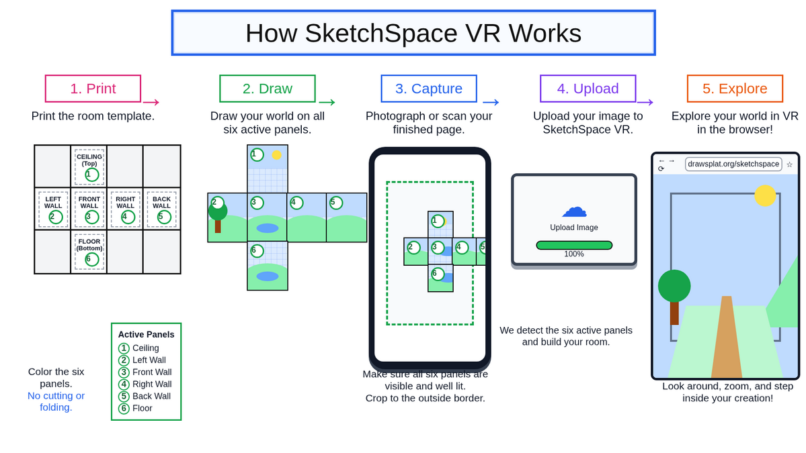

Teacher setup
Choose a process, place, story, vocabulary set, model, or summary that can be divided across four walls, a ceiling, and a floor.
Use the student tool to print the template. Keep the prompt simple: one strong idea per panel, large drawings, short labels, and clear color.
Have students photograph the full outside border, then crop tightly to that border before upload. Good lighting matters more than camera quality.
SketchSpace VR keeps images in the browser. To collect or share work, save the student image files in your classroom LMS, website, or shared drive.
How SketchSpace VR works
Use this visual overview when introducing the workflow: print, draw, capture, upload, and explore.

Low-cost cardboard viewer
For phone-based classroom rotations, use the DIY viewer guide to build a simple cardboard holder with biconvex lenses, a phone pocket, safety rules, purchasing search links, and classroom setup notes.
Lesson ideas
- Science modelsPlant or animal cells, habitats, ecosystems, states of matter, water cycle, life cycles, or organism diagrams.
- Math roomsCoordinate grid practice, geometry vocabulary, equation-solving steps, transformations, or a room where each wall explains one strategy.
- Reading and writingStory setting, sequencing, character evidence, summary panels, vocabulary with definition, sentence, illustration, and connection.
- Social studiesCountry profile, historical place, museum exhibit, peacemaker profile, or timeline room.
- Design and mediaStoryboard a game level, plan an exhibit, combine drawings with printed images, or use each wall as a scene in a larger narrative.
Ready-to-use prompts
- Life cycle roomUse the walls for stages, the floor for habitat, and the ceiling for key vocabulary or questions.
- Country profileCountry name, capital, map location, major facts, culture, and a reflection on what surprised you.
- Algebra walkthroughEach wall shows one step in solving an equation; the floor lists common mistakes and the ceiling shows the rule.
- Literature summaryTitle and author, setting, protagonist, conflict, themes, and evidence from the text.
Student starter layouts
The student tool includes six curriculum starter layouts students can load, explore, redraw, or replace with their own work.
- CitizenshipView full screenRights, responsibilities, community roles, civic choices, and reflection.
- Ecosystems and adaptationsView full screenHabitats, food webs, adaptations, interactions, and survival evidence.
- GeographyView full screenLocation, landforms, climate, human features, movement, and region.
- HistoryView full screenTimeline, people, causes, turning points, evidence, and impact.
- Life cyclesView full screenStages, organism needs, habitat, vocabulary, comparisons, and questions.
- Weather and water cycleView full screenClouds, precipitation, collection, evaporation, climate, and safety connections.
Image prompt patterns
Use this pattern when asking an image tool to create a clean SketchSpace VR-compatible grid. Keep the layout exact so the upload crop can identify the six room faces.
Create a clean printable 4-column by 3-row VR room grid template, landscape orientation, 4:3 aspect ratio. The grid must be exactly arranged like this: Row 1: blank panel, CEILING panel, blank panel, blank panel Row 2: LEFT WALL panel, FRONT WALL panel, RIGHT WALL panel, BACK WALL panel Row 3: blank panel, FLOOR panel, blank panel, blank panel Make all 12 cells equal size. Use strong outer borders and clear panel boundaries. The six active panels should each have light guide lines or a subtle drawing grid. The blank panels should be very light gray and mostly empty. Put short labels near the top of each active panel: Ceiling, Left Wall, Front Wall, Right Wall, Back Wall, Floor. No perspective view, no 3D room, no isometric view, no shadows outside the grid, no extra floating objects, no overlapping text. The result should look like a flat printable worksheet that students can draw on, photograph, crop to the outside border, and upload into a VR room tool.
For a curriculum starter, add this to the prompt:
Fill only the six active panels with classroom-friendly content for: [LESSON TOPIC]. Keep text large and readable. Use one main idea per active panel. Do not place decorative icons or images on top of text. Keep all content inside each panel.
Digital layout option
For a no-paper variation, students can build the template in a slide editor. Set a wide custom page, place a cube grid as the background, add text boxes, icons, drawings, or images, then export the finished slide as a JPG or PNG and upload it to SketchSpace VR.
Before exporting, remove the grid background if you do not want the guide lines visible inside the room.
Quick assessment
- AccuracyEach panel correctly teaches one part of the concept.
- ClarityLabels are readable, drawings are large, and color supports meaning.
- StructureThe six panels work together as a connected explanation, not six unrelated pictures.
- ReflectionStudents can explain why they placed each idea on its wall, ceiling, or floor.
Sources and inspiration
These lesson ideas are adapted from "Wallpaper Your 3D Virtual Reality Room" and "Virtual Reality with Panoform Is Easy, Engaging, and Fun for Everyone," including paper grids, student drawings, photographed templates, 3D room viewing, slide-based layouts, and content-area examples.